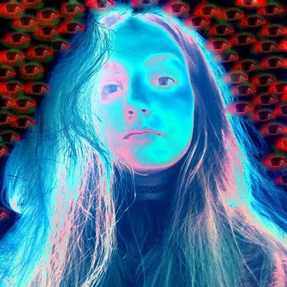

Dominykas "alohas" Kutka

I am Multimedia Design and Communication student at Kea in Copenhagen. I would describe myself as a casual gamer. However, I play a lot of competitive games. I try almost all of the new games from big developer studies but I don't forget the indie developers too. My fvourite game genres are Racing and strategy.
Klajdi "rainFalls" Ajdini
Hello, I am an mmd student studying in Copenhagen. Aside from studying I like playing games from time to time, even though I don’t play all the latest games that come out, I always watch reviews of them and i pretty much know everything about them.I mostly like the games that look pretty, meaning that I like the games that have nice graphics aside from nice gameplay. My favorite game genre is shooter games. I like a lot war games and battlefield IV is my favorite game of all times.
Karolina "karo" Valentová

I am a student of multimedia design. I like to spend my free time with painting, drawing or playing video games. I’m very picky with games, my prefference is non-hiperrealistic look and interesting storyline. My favourite games are Skyrim, Beyond good and evil, Spyro and Lego series.